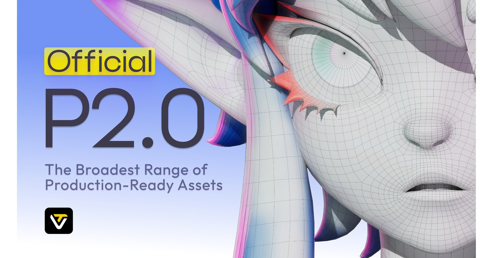

01
Tripo P2.0：原生 Quad Topology 生成
P2.0 把 AI 3D 的重點從「看起來像」推向可編輯拓樸，直接瞄準 production asset cleanup。

AI 3D ★★★★★
完整分析
Production 重點
原生 quad topology 是這次最重要的 production delta。
導入判斷
需要用角色、硬表面、薄片結構測 edge flow 與 deformation readiness。
實測 / 風險
若拓樸可穩定維持，會顯著降低 AI mesh 進 DCC 後的 retopo 成本。